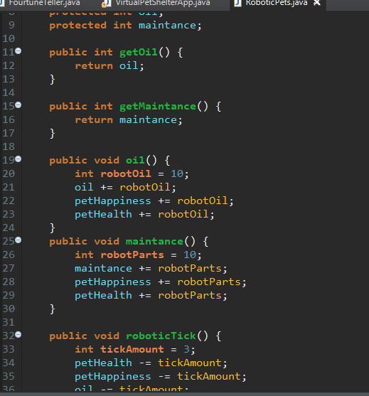
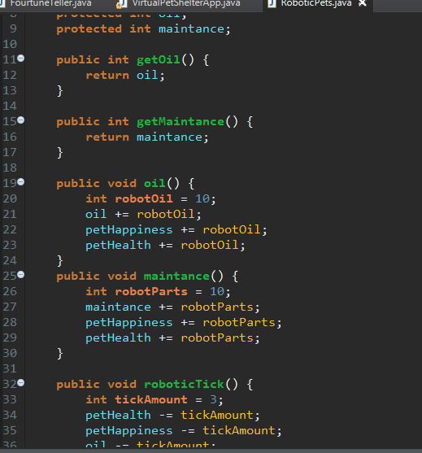

Welcome to Baltes Design and Development. My name is John Baltes I am currently a Junior Web Developer and Certified Cartographer. A little bit about myself, I gained my Associates degree in Geography and a certificate in GIS from Sinclair Community College in Dayton, Oh in 2016. I moved to Columbus to continue my education at Ohio State University, where I have studied GIS, Geography and Art. I desided to expand my knowledge and joined We Can {Code} IT to develop my skills as a programmer. My vast knowledge of the world and computers has started my initative to combine my skills to help.
 
